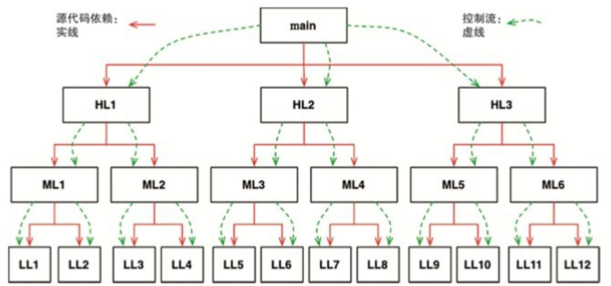
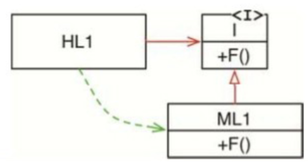

譬如封装（encapsulation）、继承（inheritance）、多态（polymorphism）。其隐含意思就是说面向对象编程是这三项的有机组合，或者任何一种支持面向对象的编程语言必须支持这三个特性。
封装
通过采用封装特性，我们可以把一组相关联的数据和函数圈起来，使圈外面的代码只能看见部分函数，数据则完全不可见。
而C++作为一种面向对象编程语言，反而破坏了C的完美封装性。
C++通过在编程语言层面引入public、private、protected这些关键词，部分维护了封装性。但所有这些都是为了解决编译器自身的技术实现问题而引入的hack——编译器由于技术实现原因必须在头文件中看到成员变量的定义。
而Java和C#则彻底抛弃了头文件与实现文件分离的编程方式，这其实进一步削弱了封装性。因为在这些语言中，我们是无法区分一个类的声明和定义的。 由于上述原因，我们很难说强封装是面向对象编程的必要条件。而事实上，有很多面向对象编程语言[3]对封装性并没有强制性的要求。 面向对象编程在应用上确实会要求程序员尽量避免破坏数据的封装性。但实际情况是，那些声称自己提供面向对象编程支持的编程语言，相对于C这种完美封装的语言而言，其封装性都被削弱了，而不是加强了。
继承
既然面向对象编程语言并没有提供更好的封装性，那么在继承性方面又如何呢？
嗯，其实也就一般般吧。简而言之，继承的主要作用是让我们可以在某个作用域内对外部定义的某一组变量与函数进行覆盖。这事实上也是C程序员[4]早在面向对象编程语言发明之前就一直在做的事了。
虽然面向对象编程在继承性方面并没有开创出新，但是的确在数据结构的伪装性上提供了相当程度的便利性。
回顾一下到目前为止的分析，面向对象编程在封装性上得0分，在继承性上勉强可以得0.5分（满分为1）。
多态
在面向编程对象语言被发明之前，我们所使用的编程语言能支持多态吗？ 答案是肯定的，请注意看下面这段用C语言编写的copy程序：
#include ＜stdio.h＞
void copy（）{
int c；
while （（c=getchar（））!= EOF）
putchar（c）；
}
在上述程序中，函数getchar（）主要负责从STDIN中读取数据。但是STDIN究竟指代的是哪个设备呢？同样的道理，putchar（）主要负责将数据写入STDOUT，而STDOUT又指代的是哪个设备呢？很显然，这类函数其实就具有多态性，因为它们的行为依赖于STDIN和STDOUT的具体类型。
这里的STDIN和STDOUT与Java中的接口类似，各种设备都有各自的实现。当然，这个C程序中是没有接口这个概念的，那么getchar（）这个调用的动作是如何真正传递到设备驱动程序中，从而读取到具体内容的呢？ 其实很简单，UNIX操作系统强制要求每个IO设备都要提供open、close、read、write和seek这5个标准函数。[6]也就是说，每个IO设备驱动程序对这5种函数的实现在函数调用上必须保持一致
getchar（）只是调用了STDIN所指向的FILE数据结构体中的read函数指针指向的函数。
换句话说，getchar（）只是调用了STDIN所指向的FILE数据结构体中的read函数指针指向的函数。
当然了，面向对象编程语言虽然在多态上并没有理论创新，但它们也确实让多态变得更安全、更便于使用了。 用函数指针显式实现多态的问题就在于函数指针的危险性。毕竟，函数指针的调用依赖于一系列需要人为遵守的约定。程序员必须严格按照固定约定来初始化函数指针，并同样严格地按照约定来调用这些指针。只要有一个程序员没有遵守这些约定，整个程序就会产生极其难以跟踪和消除的Bug。
依赖反转
在安全和便利的多态支持出现之前，软件是什么样子的。下面有一个典型的调用树的例子，main函数调用了一些高层函数，这些高层函数又调用了一些中层函数，这些中层函数又继续调用了一些底层函数。在这里，源代码层面的依赖不可避免地要跟随程序的控制流。如下图

如你所见，main函数为了调用高层函数，它就必须能够看到这个函数所在的模块。在C中，我们会通过#include来实现，在Java中则通过import来实现，而在C#中则用的是using语句。总之，每个函数的调用方都必须要引用被调用方所在的模块。 显然，这样做就导致了我们在软件架构上别无选择。在这里，系统行为决定了控制流，而控制流则决定了源代码依赖关系。
但一旦我们使用了多态，情况就不一样了，如下图

模块HL1调用了ML1模块中的F（）函数，这里的调用是通过源代码级别的接口来实现的。当然在程序实际运行时，接口这个概念是不存在的，HL1会调用ML1中的F（）函数[。
请注意模块ML1和接口I在源代码上的依赖关系（或者叫继承关系），该关系的方向和控制流正好是相反的，我们称之为依赖反转
当某个组件的源代码需要修改时，仅仅需要重新部署该组件，不需要更改其他组件，这就是独立部署能力。 如果系统中的所有组件都可以独立部署，那它们就可以由不同的团队并行开发，这就是所谓的独立开发能力。
总结
面向对象编程到底是什么？业界在这个问题上存在着很多不同的说法和意见。然而对一个软件架构师来说，其含义应该是非常明确的：面向对象编程就是以多态为手段来对源代码中的依赖关系进行控制的能力，这种能力让软件架构师可以构建出某种插件式架构，让高层策略性组件与底层实现性组件相分离，底层组件可以被编译成插件，实现独立于高层组件的开发和部署。